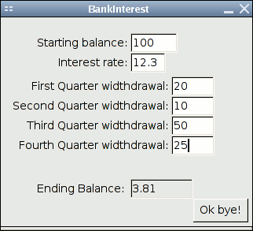

CMPT370 Lab0: Template Lab Write-up
The project directory for this sample lab
(including code, Fluid file, and Windows executable) are here.
A tarball or ZIP of this whole directory are what should be submitted to
eCourses.
Approximate lab marking weights:
- 40%: Program compiles, runs, doesn't crash, and accomplishes its primary purpose
(if it crashes for me but not for you, we can arrange for you to demo it to
me.)
- 10%: Internal code style and documentation: comments, identifiers
- 40%: Program design and lab write-up, excluding test cases
- 10%: Testing / test cases
Purpose of the Program:
Compute the amount there will be in my bank account after one year if
the interest is compounded quarterly and any withdrawals I make are entered
immediately after the interest is paid.
Suitability:
The bank account example given above is well within the reach of a simple
calculator, and is therefore of somewhat marginal suitability for computer
solution. However, the solution does illustrate how the problem-solving
process works, from problem statement to design to implementation.
Problem Restatement:
- Given: A bank account, possibly containing money.
- To Do: Compute interest, make withdrawals every 3 months.
- Desired Result: Final balance.
- Formula: interest = principal * rate * time
Libraries:
This program uses FLTK for the graphical user interface; any 1.x version
should work. This program should work anywhere FLTK works.
Problem Refinement (natural language pseudocode):
- Input Section:
- bank balance
- interest rate
- quarterly withdrawal amounts (4)
- Computation:
- calculate interest each quarter
- subtract withdrawal each quarter
- Output:
Second Refinement (natural language pseudocode):
- Input (BankInterestUI Fluid file):
- Get values from widgets for initial balance, interest rate, and four
quarterly widthdrawals.
- Computation (BankInterest core logic):
- For loop: for each current quarter from 1 to 4:
- Compute the interest using interest = principal * rate * time
- Add this to the original balance: balance = balance + interest
- Subtract the current withdrawal amount from the current balance:
balance = balance - withdrawal
- Output (BankInterestUI Fluid file):
- Set value in widget for final balance
Program Design:
This simple GUI program has several input widgets and one output widget for the
final balance. All the input widgets have the same callback:
update_balance(). This callback just does the interface between the
GUI widgets and the C function which does all the number-crunching.
The core logic is in BankInterest.cxx, which just has one function:
calc_balance(). This takes a starting balance, an interest rate
(percent), and an array of four widthdrawal amounts. It returns the final
balance amount.
Data Table:
BankInterestUI (Fluid GUI):
- widthdrawal: array of four floats
- Widgets:
- init_bal, rate, w1, w2, w3, w4: Value_Input
- balance: Value_Output
- (in FLTK/Fluid, you don't need to list all the auto-generated variable
names, but you should list any that you explicitly name that are referenced
by any callbacks.)
BankInterest (core logic):
- COMPOUND_INTERVAL = 0.25 (constant)
- calc_balance():
- balance: float (current balance)
User Manual:
Description:
Bank Interest is a small application designed to maintain a
simple bank account record. It allows the user to specify the opening balance,
and annual interest rate at the beginning of the program, and then to make
quarterly withdrawals. Interest is calculated on the balance before the
withdrawal.
Operation:
There are six input boxes in the main window:
- Starting balance:
Type in the number of dollars that the bank account had at the start of the year.
- Interest rate:
Type in the interest rate as a percentage;
for example, type 6.5 if the interest rate is 6.5%. Do not type
the percent symbol.
- First Quarter widthdrawal:
Type in the amount being withdrawn for that quarter in the form 10.23.
That is, give the number in decimal form and
without a dollar sign. Repeat for all four quarters of the year.
At the bottom of the window you will see the final balance in the account at
the end of the year. It will automatically update each time you change a value
in the input boxes.
To quit the program, select the "Ok, bye!" button, or press Esc.
Test Cases, with expected results:
Normal Test case:
- Starting balance: 100
- Interest rate: 12.3
- First Quarter widthdrawal: 20
- Second Quarter widthdrawal: 10
- Third Quarter widthdrawal: 50
- Fourth Quarter widthdrawal: 25
- Ending balance: 3.81
Test case with negative balance:
- Starting balance: 100
- Interest rate: 8.53
- First Quarter widthdrawal: 47
- Second Quarter widthdrawal: 89
- Third Quarter widthdrawal: 22
- Fourth Quarter widthdrawal: 6
- Ending balance: -10.41
Bugs / Limitations
The program is quite limited in only allowing four widthdrawals, at a fixed
compounding interval of once a quarter. Potential extensions could allow
for arbitrary compounding intervals, and perhaps a more flexible way of
specifying when widthdrawals happen.
Screenshots

(Can be embedded here or left as separate files if you like,
but list the filenames here.)